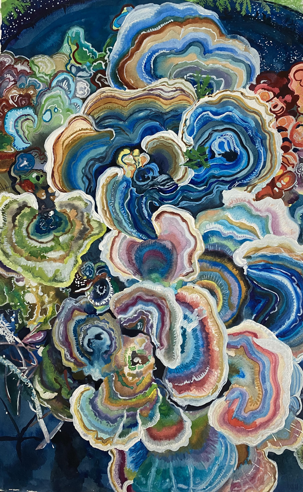

I have wanted to experiment with different mediums, and being familiar with painting, I decided to use watercolor. It was a strange experience trying not to oversaturate the paper and layer to create more depth. So for my subject matter, I wanted to paint mushrooms and capture the layers in each section.
